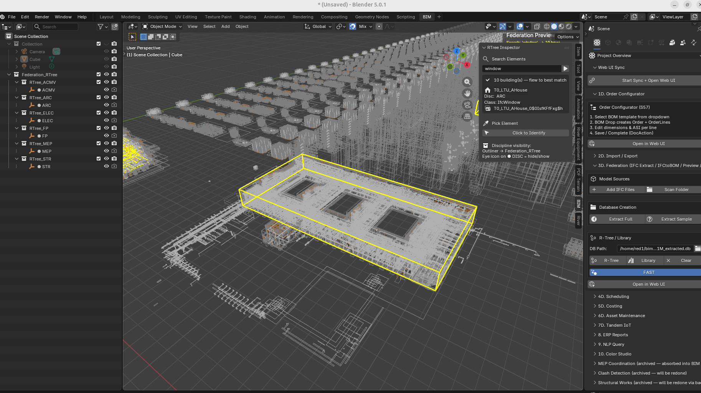
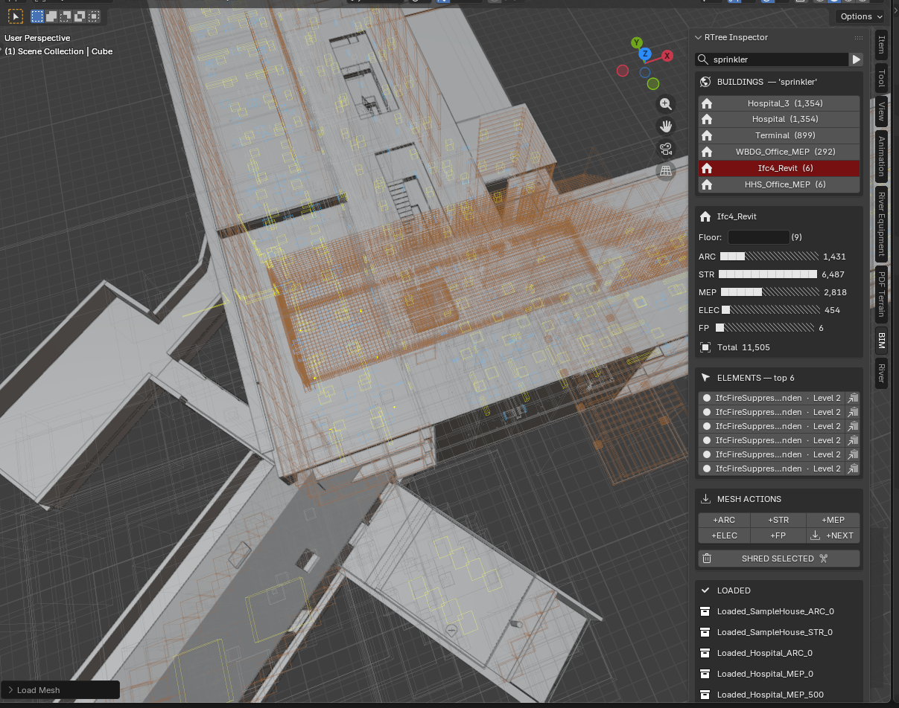
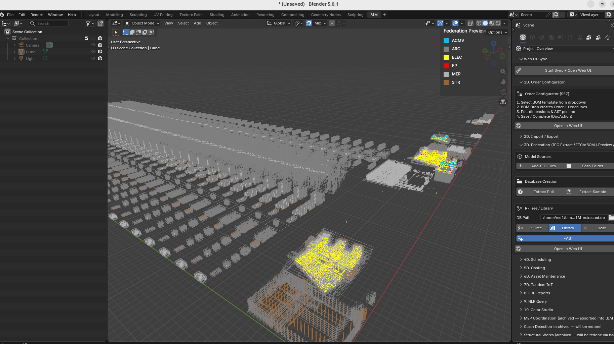
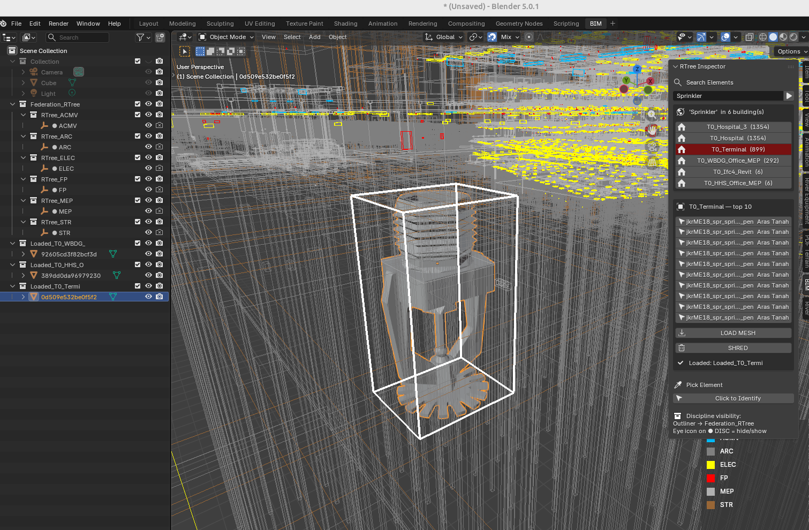

Compile Once, Query Forever¶
RTree GPU Query Engine — BIM Federation at City Scale¶
The industry loads the model, then queries it. We query the index. The model loads only what you ask for.

What This Is¶
The RTree Query Engine is the primary viewport and navigation system for federated BIM models at 1M+ elements. It replaces the "open the model" paradigm with a database cursor attached to a spatial GPU renderer.
The model is never fully loaded. It is always live.
Architecture¶
┌─────────────────────────────────────────────────────────┐
│ elements_rtree (SQLite R-tree virtual table) │
│ elements_meta (guid, name, discipline, ifc_class, │
│ building, storey) │
│ 1M+ rows — compiled once by the IFC extraction pipeline│
└────────────────────┬────────────────────────────────────┘
│ O(log n) spatial query
┌──────────▼──────────┐
│ RTree GPU Path │ LOD-0 — always on
│ GPU line batches │ 1M wireframes
│ 6 discipline colors│ <13s load, instant orbit
│ zero mesh in RAM │ zero Blender objects
└──────────┬──────────┘
│ on query / pick
┌──────────▼──────────┐
│ Drill-Down Engine │ L1 → L2
│ L1: buildings │ click → fly + load L2
│ L2: top 10 elements│ click → fly + white highlight
└──────────┬──────────┘
│ on LOAD MESH
┌──────────▼──────────┐
│ Stingy Mesh Loader │ on-demand only
│ viewport-centre │ camera = selector
│ pre-warmed meshes │ <1s per MESH press
│ from library.blend │ one named collection
│ LOAD / SHRED │ non-destructive
└─────────────────────┘
Complexity Class¶
| Operation | This system | Traditional viewer |
|---|---|---|
| Open model | O(1) — load index only | O(n) — load all geometry |
| Query by type | O(log n) — R-tree spatial filter | O(n) — iterate loaded objects |
| Navigate to element | O(log n) — SQL + viewport fly | Manual — user scrolls/searches |
| Load geometry | O(k) — k = what you asked for | O(n) — everything or nothing |
At 1M elements: traditional viewer stalls on open. This system opens in seconds, queries in milliseconds, loads in seconds — only what was asked.
The Three Modes¶
Mode 1 — RTree GPU (always on)¶
- Loads on "Preview" button press
- All 1M elements rendered as colored wireframe bounding boxes
- 6 discipline colors (ARC/STR/MEP/ELEC/FP/ACMV)
- Eye icon on
● DISCin Outliner → hide/show that discipline's GPU batch - Orbit, zoom, pan: instant at any scale
- This never turns off. It is the permanent spatial context.
Mode 2 — Federation Cockpit (Query + Drill-Down)¶
Search field in N-panel → BIM tab → RTree Inspector (S183 cockpit layout):
[ search... ▶ ]
BUILDINGS — 'IfcDoor'
▶ Hospital ×2 (18,241) ← click → fly + ghost city
▶ LTU_AHouse ×18 ( 699) ← ×18 = 18 tiles, flies to nearest
▶ Clinic ( 321)
── on click Hospital ──────────────────
Hospital Floor [ ]
ARC ████████████░ 18,241
STR ███░░░░░░░░░░ 3,445
MEP ████████████░ 12,876
ELEC ████░░░░░░░░░ 4,201
FP ██░░░░░░░░░░░ 2,109
Total 40,872
ELEMENTS — top 10
IfcDoor · Frame Door · Level 3 [→][📋]
IfcDoor · Frame Door · Level 2 [→][📋]
MESH ACTIONS
[+ARC][+STR][+MEP][+ELEC][+FP][+NEXT]
[ SHRED SELECTED ✂ ]
LOADED
Hospital_ARC_0
Hospital_STR_0
When a building is drilled into, all city wireframes ghost — the yellow building envelope and white picked element read clearly against a dim city. When x-ray is on (Alt-Z), wireframes return to full visibility. On new search or clear, full colours return.
Buildings deduplicated by type — T0_LTU_AHouse … T17_LTU_AHouse shows as one
entry LTU_AHouse ×18. Sandbox tile prefixes (S0_0_, T0_) stripped automatically.
Click flies to the nearest tile to camera.
Search resolves: element name, IFC class, discipline, GUID, building name. One search box. No mode switching. Works across 500+ building rows, deduplicates to 10 display entries.
Cockpit features (S183–S184): - Unicode discipline bars — proportional fill showing ARC/STR/MEP/ELEC/FP counts - Storey filter — set floor, MESH loads only that storey - GUID copy to clipboard — one click per element - Pre-warm on drill-in — building meshes link in background while user reads cockpit

Two navigation patterns from one query model: - Know what, find where → type "IfcDoor", find which buildings have doors + discipline breakdown - Know where, find what → click any wireframe box, system identifies it, GUID to clipboard
Mode 3 — Stingy Mesh Loader¶
MESH ACTIONS
[+ARC][+STR][+MEP][+ELEC][+FP][+NEXT]
Camera is the selector. MESH loads only elements within the viewport centre — what you're looking at is what you get. Pan the camera, press MESH again, get more geometry there. No learning curve.
- +DISC buttons: load that discipline's elements within viewport centre radius
- +NEXT: progressive — each press loads the next 500 (ARC→STR→MEP→ELEC→FP, with offset)
- Storey filter: set Floor field → MESH loads only that storey. Clear for all floors.
- Each load creates an independent named collection in the Scene Inventory
- SHRED SELECTED: select any loaded mesh objects in viewport → removed. Freestyle.
- Nothing selected → removes last loaded batch
Each Load is independent. Load Hospital ARC, load Clinic MEP, shred Hospital ARC. The user can also hand-pick individual mesh objects in the viewport and shred just those — building up a precise cross-section by addition and subtraction. The RTree is never affected.
Pre-warm on drill-in (S184): When the user clicks a building in the cockpit, the system counts disciplines (50ms) and displays the cockpit bars. While the user reads those bars, a background timer silently links that building's geometry hashes from library.blend (~2s, invisible). By the time the user presses +MESH, the meshes are already in RAM.
The 15-second workflow: 1. Preview → 1M wireframes in 13s 2. Search → click building → cockpit shows discipline bars (meshes pre-warming in background) 3. Pan to area of interest → press +ARC → geometry appears in <1s 4. Pan elsewhere → +ARC again → more geometry where you look 5. Select unwanted pieces → SHRED → exactly what you want remains Result: a hand-crafted view of a million-element project in 15 seconds.
Viewport Click-Picker¶
"Click to Identify" button activates a modal LEFT_MOUSE handler.
Click any wireframe box in the viewport: 1. Ray cast from camera through click position into IFC coordinate space 2. Two-pass hit test: - Pass 1: does ray hit a highlighted building envelope? → return that building, trigger L2 - Pass 2: does ray hit any individual element bbox? → return that element 3. Result populates L2 list in N-panel 4. Picked element highlighted white in GPU overlay
The click is the fastest path to identification — no typing, no scrolling. Point at something, click, know what it is.

Performance (sandbox_1M, S184 2026-04-13)¶
A whole city of one million elements, 100 thousand unique meshes, loaded in 13 seconds. Search, drill, mesh — under 1 second. Ultra smooth navigation with no lag on a normal laptop.
| Metric | Result |
|---|---|
| DB size | 1,061,736 elements, 6 disciplines |
| Unique geometry hashes | 108,000+ |
| City extent | 1.73km × 2.48km × 79m |
| RTree load time | ~13s |
| Orbit / pan | Instant (GPU batch, no per-frame eval) |
| Search SQL | <2s (LIKE scan, 1M rows) |
| Building drill-down | <0.5s (+ background pre-warm ~2s, invisible) |
| Mesh load (viewport) | <1s (pre-warmed, viewport-centre query, batch transforms) |
Scales to 10M+ elements with no architectural changes. The DB is the ceiling, not the viewer.
Geo Hash Hell — SOLVED (S180)¶
When loading meshes from library.blend, Blender renames datablocks that collide at the 63-char name limit. If geometry_hash name is truncated or duplicated, the transform lookup fails and elements appear at the origin.
S178 fix: T_{full_hash} naming, 21/21 PASS (0dc3912c).
S180 confirmation: Shred works. Placement dead accurate across all tested
elements — sprinklers, doors, windows, structural members. Stale-selection bug
(_selected_element not cleared on new building drill-in) also fixed. No
further geo hash hell reports. This is considered closed.
Files¶
| File | Role |
|---|---|
federation/bbox_visualization.py |
RTree GPU batches, draw handler, search/pick functions |
federation/discipline_legend.py |
GPU overlay (bottom-right, discipline colors + search hint) |
federation/operator.py |
FedRTreeSearch, FedRTreeFlyToResult, FedRTreeFlyToElement, FedRTreePick |
federation/ui.py |
BIM_PT_rtree_inspector (N-panel, bl_order=0) |
federation/prop.py |
rtree_search, rtree_result_, rtree_picked_ properties |
federation/__init__.py |
operator + panel registration |
library/library.blend |
mesh source for Stingy Loader (276MB, 120K meshes) |
DAGCompiler/lib/input/*_extracted.db |
extracted federation DBs (source of truth) |
Related Specs¶
internal/DLOD_SPEC.md— LOD tier system (§S179: LOD-0 = RTree GPU, not bbox mesh; GN mode halted S184)prompts/S184_gn_dlod_fix.md— S184 spec: viewport-centre query, batch transforms, pre-warm on drill-ininternal/StressTest_1M_Results.md— full performance history S165→S178docs/StressTest_1M.md— the 1M element loading challenge and GN architectureprompts/S179_dlod_rtree_handoff.md— corrected DLOD architectureprompts/S180_stingy_mesh_loader.md— next session: picker fix + Load/Shred
The Paradigm¶
Every BIM viewer built before this one assumes the same workflow: open the model, wait for it to load, then navigate what's loaded. At city scale — 50 buildings, 10M elements, 20 disciplines — that workflow breaks. The model is too large to hold in memory. The viewer stalls.
The alternative is to treat the BIM model as a database, not a file.
The compiled output of the IFC extraction pipeline — elements_meta,
elements_rtree, element_transforms — is a queryable index.
The geometry exists in library.blend as a mesh library.
Nothing is loaded until asked.
The user navigates by querying. The geometry appears on demand. The city is always visible as wireframes. The detail appears where attention goes.
This is how game engines work at 100M polygons. This is how databases work at 1B rows. BIM has been doing neither. Until now.

Compile Once, Query Forever.
Video Demo¶

RTree Query Engine in action — 1M+ elements, search, drill-down, instant mesh loading.
Watch on YouTube